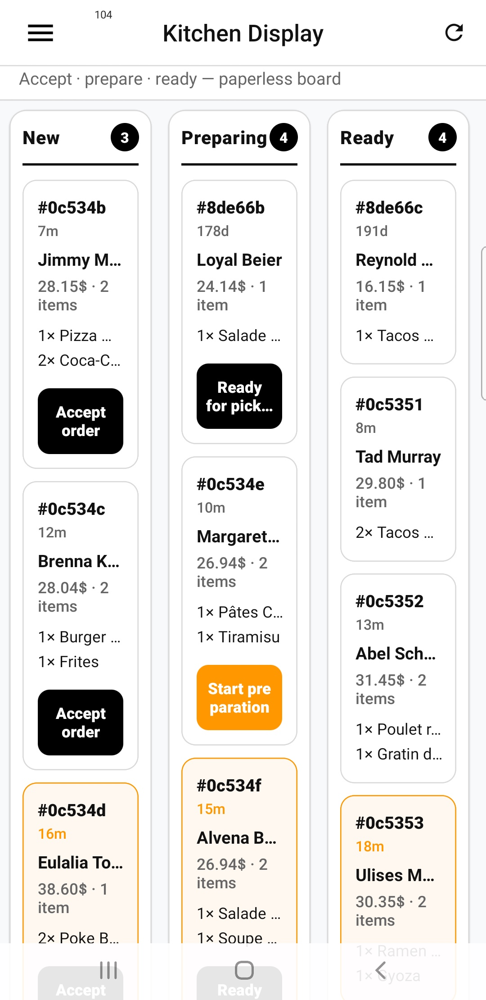

Kitchen Display (KDS)
Paper tickets get lost, stained, and shouted over. A kitchen display turns accepted orders into clear tickets the line can advance — so the pass stays calm when Friday night hits.
From “order accepted” to “ready for the driver”
Once the restaurant accepts an order, the kitchen needs a view that is not the same as the manager’s analytics dashboard. The Kitchen Display focuses on tickets: what to cook, what is in progress, and what is ready for pickup. Staff advance status with large, thumb-friendly controls — ideal on a tablet propped by the pass.
The same order document still feeds admin earnings and the driver app. KDS is not a side system; it is the kitchen face of the live order.

Why kitchens adopt it quickly
- Less chaos — everyone looks at the same board instead of hunting for a thermal slip.
- Clear handoff — when a ticket is ready, the courier flow already knows what to expect.
- Demo-ready — seeded kitchen tickets help you show a busy pass on day one, not an empty list.
Pair KDS with Logistics & POD and you can tell a full story: kitchen prepares, driver collects, customer tracks, doorstep is proven.
Where it lives for partners
Restaurant staff open Kitchen Display from the partner app navigation — next to orders, menu, and the monetization screens (subscriptions, sponsored listings). One app for the business; KDS is the screen that belongs on the stainless steel counter.
For buyers evaluating restaurant software, a real KDS is often the difference between “nice ordering UI” and “we could run dinner service on this.”